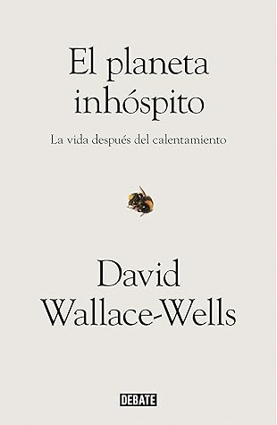

El planeta inhóspito
Reseña por Jorge I. Zuluaga

Ver detalles · Ver reseña en GoodReads (necesita cuenta)
Este es, justamente, el «mensaje» que termina por transmitir la juiciosa investigación y las profundas reflexiones que el periodista David Wallace-Wells presenta en este libro: no hay prácticamente ninguna razón para sentirnos optimistas frente a la crisis climática. Sencillamente, ¡la embarramos!
El desastre venidero (o, para ser más realistas, ¡el desastre que ya comenzó!) no se puede evitar; ni siquiera con esos «kabukis climáticos» en los que algunas autoridades de algunos de los países que podrían generar un cambio (China, Estados Unidos, India, etc.) posan de compungidas, se comprometen en el papel y al final no consiguen absolutamente nada, tal y como se lo recordó muy valientemente Greta Thunberg en la reciente cumbre (kabuki climático) de Madrid.
En «El planeta inhóspito», Wallace-Wells hace el papel de una «Thunberg» del mundo de la divulgación científica.
Pero a diferencia de la Thunberg, quien todavía es una joven a la que los medios presentan simplemente como un símbolo de la indignación de las generaciones que heredarán una «Tierra asesina» (parafraseando a Peter Gleick: si la Tierra es un tiburón, el clima son los dientes), una figura más mediática que científica (injustamente, porque Greta Thunberg, a pesar de su corta edad, conoce la crisis mucho mejor que el 99 % de los adultos vivos), Wallace-Wells, a través de lo que va camino a convertirse en un merecido superventas, presenta, de manera entendible para todos, las dimensiones de esta crisis. A quienes no les simpatice Greta Thunberg y sus publicitados arranques de furia o tristeza (que son solo la punta del iceberg de su maravillosa labor como joven activista), lean este libro.
Apelando al dicho muy popular de la divulgación científica: si los dinosaurios se extinguieron porque no tenían programa espacial, los humanos nos extinguiremos por no tener moral ambiental.
El libro está dividido en tres partes que yo llamaré, arbitrariamente: los hechos (presentes y futuros), las implicaciones (económicas, éticas, políticas, sociales) y una original reflexión personal.
La primera parte es mucho más «fácil» de leer (pero también es la más difícil de asimilar y la que provoca más angustia).
La segunda es más «oscura», más difícil de leer y, en ocasiones, llega casi a ser incomprensible (Wallace-Wells le da voz a algunos extraños movimientos ambientales como el nihilismo climático, la «dark ecology», el futilitarismo humano, entre otras) que parecen realmente sacados de una novela de ciencia ficción; allí también reflexiona sobre la verdadera inevitabilidad del desastre y las posibles soluciones.
La parte final es posiblemente la más personal de todas. Una crítica a los científicos que nos hemos dejado llevar por la idea del «no importa, la Tierra seguirá adelante aun sin los humanos» o lo que Peter Ward llama «pensamiento de planeta». Frente a esta actitud, Wallace-Wells lanza un grito desesperado (o así lo leí yo) para que actuemos reconociendo que la existencia de la especie humana (y todas las formas de vida tan increíblemente complejas, no solo en el plano biológico, sino también cerebral de este y otros planetas) no son simplemente un accidente menor en el camino hacia la muerte térmica del universo, sino posiblemente, y como lo sostiene el denominado principio antrópico, uno de los atributos más importantes del universo.
Los hechos son contundentes. En tan solo una generación (mi generación, ¡qué vergüenza!) la actividad humana —y no solo las emisiones de gases de invernadero, también la explotación indiscriminada del suelo, la deforestación, la contaminación del aire y del agua y el vertimiento de plásticos (de todos los tamaños), entre muchos otros efectos— han desestabilizado todos los sistemas complejos que mantienen estables o sostienen los ciclos ambientales requeridos para nuestra supervivencia y la de las especies vivas con las que compartimos el planeta.
La crisis no es futura. Es presente.
«El planeta inhóspito» no es una lectura para hacer cuando estés triste o angustiado. Es una lectura que te angustiará y posiblemente te pondrá muy triste. Yo la clasificaría como una de las tres lecturas obligatorias antes de morir. Suena duro, pero es increíblemente real.
Personalmente, después de leer este libro (¡increíble!, soy científico y tuve que leer este libro para llegar a este estado), me siento viviendo en una de las tantas historias de ciencia ficción que relataron, durante el siglo pasado y lo poco que llevamos del presente, el futuro oscuro de vivir en un planeta sin futuro.
Nos pasamos prácticamente toda la historia de Occidente temiendo el «final de los tiempos». Casi desde el principio de la cristiandad, por ejemplo, no ha habido una sola época en la que no se haya anunciado desde los púlpitos, a todos los creyentes, la necesidad inminente de prepararse para la «llegada del anticristo». No hay casi ningún autor de ciencia ficción que no haya escrito sobre el tema de una civilización (terrestre o extraterrestre) que se enfrentará a la amenaza (interna o externa) de su propia aniquilación (desde los eclipses de *Anochecer*, de Asimov, hasta la más reciente flota trisolariana de Cixin). Pero es paradójico que, cuando llega el momento de enfrentar la verdadera amenaza, la verdadera crisis de «fin del mundo» (para la mayoría de los humanos), como no son los curas, ni los escritores de ciencia ficción, ni los profetas de la pseudociencia, sino los científicos con pruebas objetivas los que lo anuncian, haya surgido un movimiento tan grande de negación a lo que es evidente.
¿Cuál de esos profetas religiosos o literarios habría adivinado que, en el momento justo de saber que la crisis había llegado, los líderes políticos, religiosos y económicos no harían absolutamente nada?
Si nos salvamos de esta (lo que no es muy probable en vista de la evidencia científica disponible), habrá material de sobra para religiones y escritores del futuro, de una edad poscrisis climática.
Le agrego a mi todavía reducido vocabulario de la crisis (porque confieso que me siento un niño que apenas empieza a conocer este tema), además del conocido término de «Antropoceno», que describe los efectos notables (a escala geológica) de la actividad humana, estos otros dos términos: Eremoceno, o «la era de la soledad», que describe la manera como nuestra actividad está reduciendo la diversidad biológica hasta dejarnos con un puñado de especies que explotamos indiscriminadamente; y el más oscuro «Cthuluceno», la «era de Cthulhu», el monstruo de múltiples rostros y malevolencia cósmica de Lovecraft.
Eso es la crisis climática. Sin quererlo, materializamos a Cthulhu y ahora soñamos con que podemos sacudirnos de él con discursos positivos y medidas graduales promovidas desde kabukis climáticos periódicos.
¿Habrá algo por lo cual sentirse, así sea mínimamente, optimistas?
Si eres un científico del clima, no.
Si eres un político... bueno, eso no cuenta... los políticos nunca entendieron nada, aunque siempre pudieron hacerlo todo.
Si eres un miembro de la «iglesia de la tecnología», como la llama Wallace-Wells (y como lo soy yo... aunque mi fe empieza a flaquear después de este libro), todavía tenemos la promesa de la geoingeniería, los viajes espaciales (escapismo) o la terraformación de Marte (más escapismo).
Y si eres un ciudadano del común... bueno, eso tampoco cuenta... los ciudadanos del común todavía no han entendido nada y, la verdad, tampoco podrán hacer mucho. Cuando entiendan, será demasiado tarde.
Pero si eres como Wallace-Wells (yo quiero serlo), hay una posibilidad real. Una postura política que podría funcionar. Increíblemente, el autor la deja solo para la olvidada sección de notas (¡lean las notas!... están llenas de buenas referencias y reflexiones).
La reproduzco literalmente (porque sé que muchos de los que leen esta reseña tal vez no lleguen hasta allá):
«La degradación del planeta y el fin de la abundancia natural exigen un nuevo progresismo animado por una renovada energía igualitaria; creo, como Al Gore, que deberíamos impulsar la tecnología para perseguir todo tipo de esperanza que quede de evitar un cambio climático desastroso; incluso provocando, o permitiendo, que algunas fuerzas del mercado contribuyan a hacerlo cuando eso sea posible. Creo, como Klein, que algunas de estas en particular casi se han apoderado de nuestras políticas; pero no del todo, lo que deja un prometedor y brillante resquicio de oportunidad. Y creo también, como Bill McKibben, que puede conseguirse un cambio significativo e incluso drástico a través de las vías habituales: votaciones, organización y actividad política desplegada a todos los niveles. Dicho de otro modo: cualquier otra respuesta a la crisis climática me parece moralmente incomprensible».
Es momento para tener coraje, no esperanza.
Lean HOY MISMO este libro.